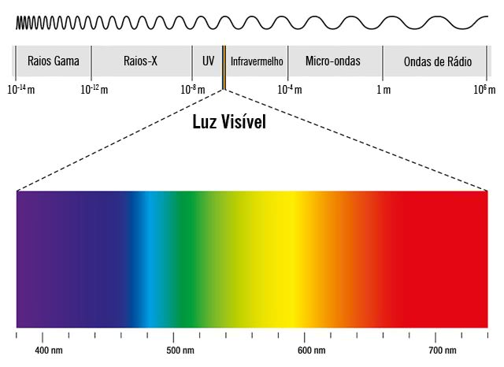
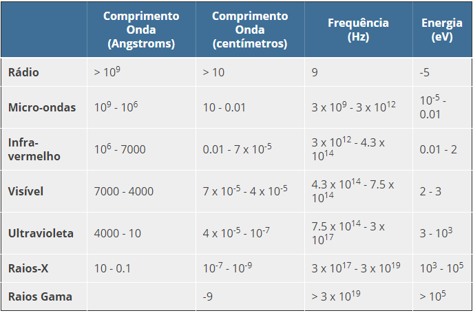

Sumário
Espectro eletromagnético
Conceito
Espectro eletromagnético é a distribuição, conforme a variação de intensidade da radiação
eletromagnética, em relação ao seu comprimento de onda ou frequência
Divisão
No espectro temos representadas 7 tipos de ondas eletromagnéticas: ondas de rádio, microondas,
infravermelho, luz visível (vermelho, laranja, amarelo, verde, azul e violeta), ultravioleta, raios x e raios gama.
Propagação
Todas as ondas do espectro eletromagnético se propagam na velocidade da luz, como qualquer outra onda e, com exceção da luz visível, são todas invisíveis a olho nu.

Espectro Eletromagnético e suas divisões - Link da imagem
Diferenciação
Conforme fica evidente na primeira parte da figura acima, as ondas têm comprimentos diferentes e frequências diferentes. Quanto menor o comprimento de onda maior a sua frequência e vice versa.

Informações sobre as Ondas - Link da imagem
Classificação - ordem crescente em frequência
- ONDAS DE RÁDIO - As ondas de rádio ficam localizadas em um dos extremos do espectro e tem-se a frequência mais baixa e, consequentemente, o comprimento mais longo.
- MICRO-ONDAS - Após as ondas de rádio, localizam-se as micro-ondas. São ondas de baixa frequência e com um comprimento mais do que as ondas de rádio.
-
INFRAVERMELHO - Localizado mais ao centro do espectro eletromagnético, o infravermelho, apesar de não ser
igual a luz visível, pode ser facilmente visto com o auxílio de aparelhos.
CURIOSIDADE - Podemos observar os raios infravermelhos com as câmeras dos nossos aparelhos celulares. - LUZ VISÍVEL - É a única onda eletromagnética visível a olho nu. Clique aqui para visualizar a imagem
- RAIOS ULTRAVIOLETA - Após a luz visível, encontra-se os raios ultravioleta (Raios UV). É uma onda invisível a olho nu, porém seus efeitos devido a longa exposição ficam evidentes.
- RAIOS X - Os raios x são raios com uma frequência um pouco mais alta e com um comprimento menor que as anteriores. São muito utilizados nas radiografias.
- RAIOS GAMA - Por fim temos os raios gama, com maior frequência do espectro e menor comprimento. São utilizados na esterilização e a descontaminação por energia ionizante em equipamentos médicos.
RESUMÃO
Chegou a hora de fazer o Resumão! Para isso, aqui vão algumas dicas para você fazer o seu de forma completa e saber tudo sobre os conceitos do Espectro Eletromagnético:
- Esse é fácil de se lembrar, você usar sua criatividade para fazer desenhos que lhe ajudem a saber das ondas.
- Uma dica interessante, quando mais à direita do espectro, maior é o comprimento de onda, e quanto mais à esquerda, maior a frequência.
- A luz que nos enxergamos (luz visível) está entre a luz Ultravioleta (UV) e os raios infravermelho, lembre-se disso, é importante.
Refêrencias
Vídeo Youtube - Experiência, como ver a luz infravermelho do controle remoto
SóFísica - Cor e Frequência